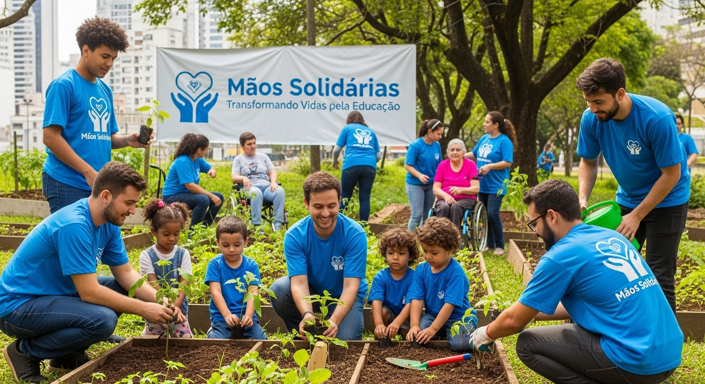
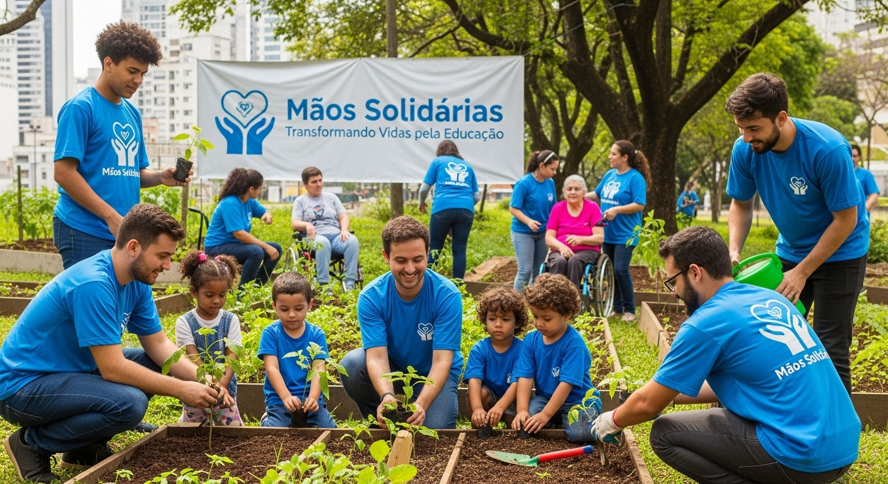
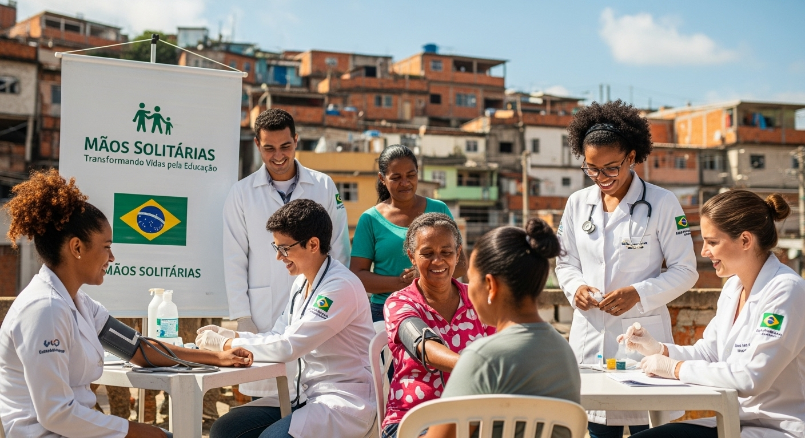
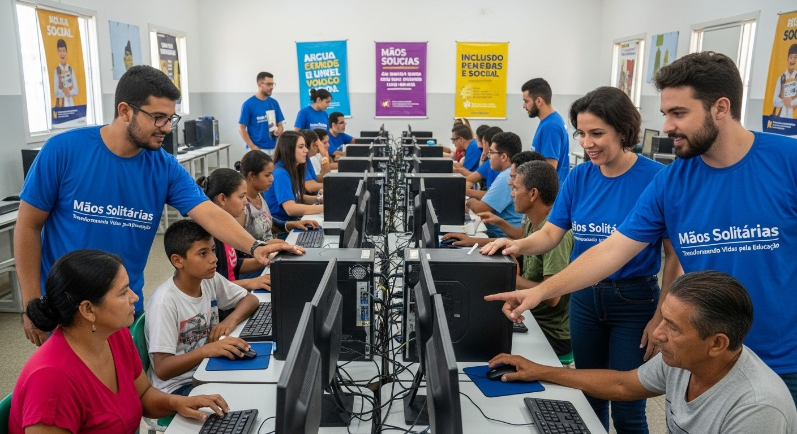

Educação Verde
Educação e Meio Ambiente
Focamos em levar aulas de sustentabilidade para 500 crianças em escolas públicas. Impacto: +1000 árvores plantadas.
Ver DetalhesEducação e Meio Ambiente
Focamos em levar aulas de sustentabilidade para 500 crianças em escolas públicas. Impacto: +1000 árvores plantadas.
Ver DetalhesSaúde e Bem-estar
Oferecemos consultas e orientações médicas básicas. Impacto: Mais de 2.000 atendimentos em um ano.
Ver DetalhesTecnologia e Cursos
Cursos de informática para jovens e adultos, aumentando suas chances no mercado. Impacto: 70% de recolocação.
Ver DetalhesSua paixão e suas habilidades são o que movem a Mãos Solidárias. Descubra oportunidades e venha fazer a diferença!
Candidatar-se para VoluntariadoContribua com a sustentabilidade de nossos projetos. Sua doação é 100% rastreável e transparente.
Realizar Doação Online